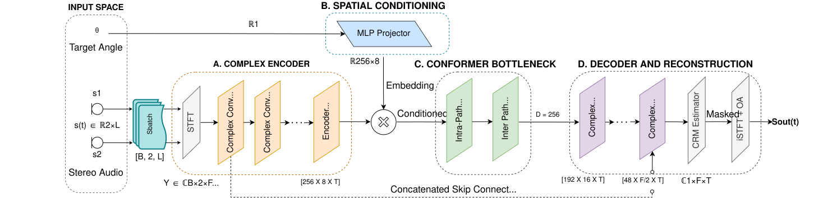
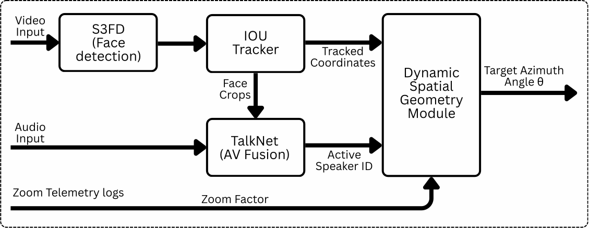
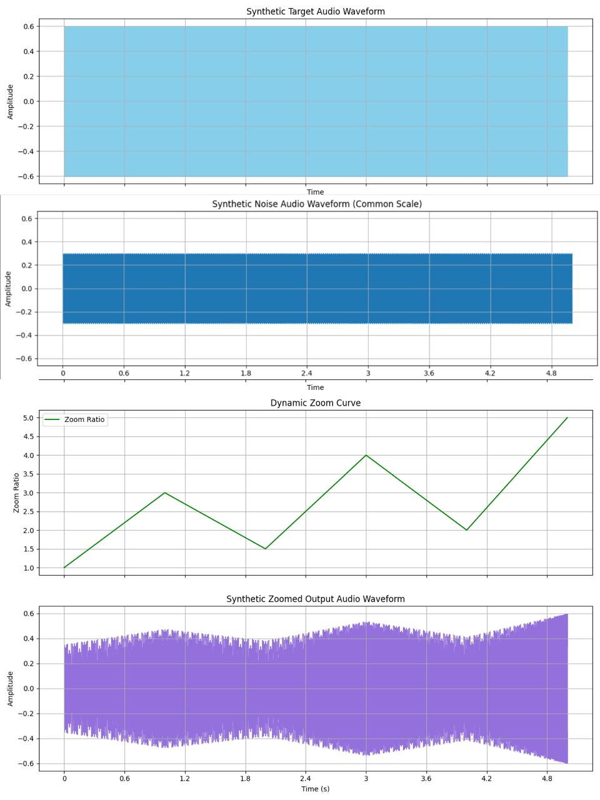
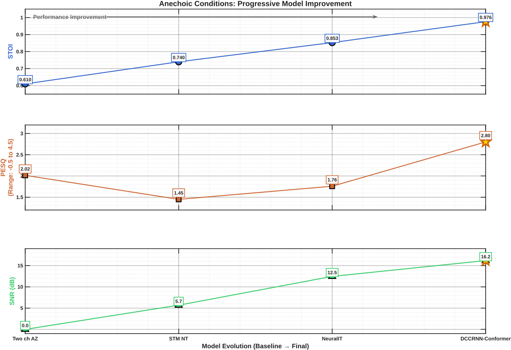
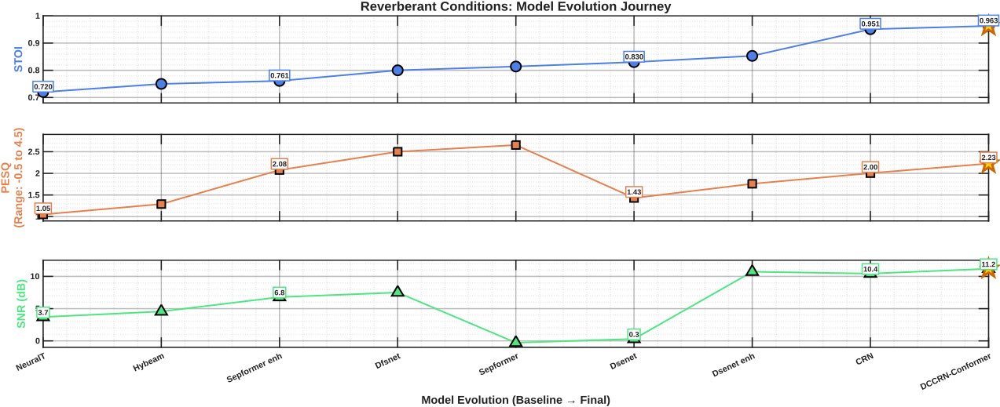
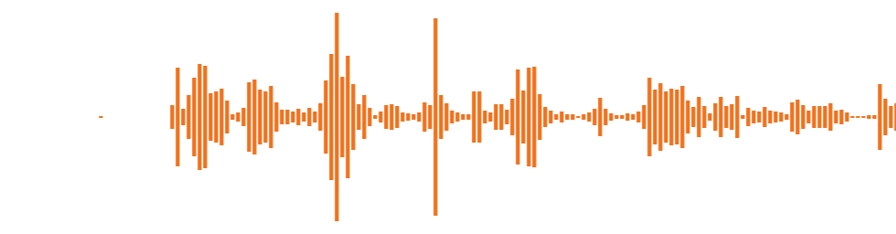
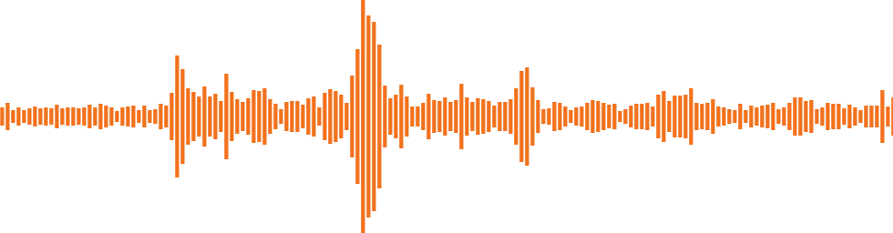
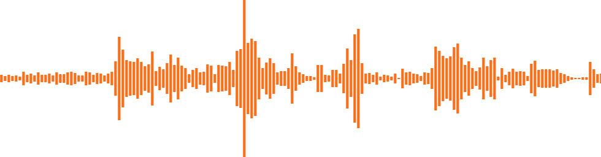

Signal Processing Cup 2026
IIT Kanpur : Lowkey High-Pass
Problem Statement
Audio-visual sensing on smartphones has advanced significantly; however, most systems treat visual capture and audio acquisition as independent processes. While optical zoom enables users to visually focus on a region of interest, captured audio remains a global mixture, resulting in poor perceptual alignment between what is seen and heard.
The 2026 Signal Processing Cup addresses this by focusing on real-time audio-visual zooming for smartphones. The objective is to selectively enhance audio corresponding to a visually chosen target speaker, while suppressing interfering speakers and background noise using only 2 microphones.
Participants must develop algorithms that exploit acoustic spatial cues and visual information to localize, track, and enhance desired sound sources. Solutions may draw from beamforming, adaptive filtering, machine learning, or hybrid frameworks. A key emphasis is edge-level, real-time operation on mobile devices with strict constraints on latency, memory, and power consumption.
Project Video
Dataset Generated
This large-scale dataset (150K samples) simulates real-world room conditions using LibriSpeech (target) and MUSAN (interference) as raw audio sources. Each sample is 4 seconds long with 16kHz sampling frequency. The signal-to-interference ratio is set to 0dB and signal-to-noise ratio to 5dB. The microphone is positioned 1m from sources in a 4.9m cubic room with 0.5s reverberation time.
Efficiency: The RIR pre-calculator computes Room Impulse Response for 3600 angles (0.1° resolution) enabling instant retrieval. With parallel processing, complete dataset generation takes <40 minutes!
Proposed Direction-Conditioned Speech Extraction System
We consider a two-microphone recording setup in a reverberant environment, where a target speech source and one or more interfering sources are present at different spatial directions. The objective is to extract the speech signal arriving from a desired target direction while suppressing interference, noise, and reverberation.
Let x₁(t) and x₂(t) denote the time-domain signals captured by the two microphones. The target source is assumed to arrive from direction θ, while all other sources are treated as interference. The proposed system exploits spatial cues from stereo audio and explicit directional conditioning to perform selective speech extraction.
System Overview: The overall architecture consists of three major stages:
- Complex time–frequency representation and encoding
- Direction-conditioned bottleneck processing with dual-path temporal modeling
- Complex ratio masking and waveform reconstruction
Complex Time–Frequency Representation
The stereo input signals are transformed into the short-time Fourier transform (STFT) domain to obtain a complex-valued time–frequency representation. For each microphone channel m ∈ {1, 2}, the STFT is given by:
Here, f and ν denote frequency bin and time frame indices, respectively. Both real and imaginary components are explicitly preserved and stacked as separate channels to retain phase information critical for spatial modeling and de-reverberation.
Complex Encoder Network
A deep complex-valued convolutional encoder extracts high-level spectral–spatial features while maintaining phase consistency. The encoder progressively increases channel dimensionality while downsampling along the frequency axis and preserving temporal resolution.
- Complex 2D convolution
- Independent batch normalization on real and imaginary components
- LeakyReLU nonlinearity
- Squeeze-and-Excitation based channel attention
Channel attention enables the network to emphasize speech-dominant frequency regions while suppressing noise- and reverberation-heavy bands.
Directional Angle Conditioning
To achieve spatial selectivity, the target direction θ is provided as side information using a continuous sinusoidal encoding:
This representation avoids angular discontinuities and enables smooth interpolation across directions. The angle vector is passed through an MLP to produce an embedding that is injected into the bottleneck features via additive feature-wise modulation:
This conditioning biases the network toward components arriving from the desired direction while suppressing off-axis interference.
Dual-Path Conformer Bottleneck
To model reverberation decay and long-range temporal dependencies, a dual-path conformer is applied at the bottleneck. It consists of:
- Self-Attention (parallel processing comparison of time frames)
- Convolution (to ensure continuity)
The self attention provides global context, and the convolution enforces local structure continuity.
Complex Decoder with Skip Connections
The decoder mirrors the encoder using complex-valued transposed convolutions. Skip connections link corresponding encoder and decoder layers, preserving fine spectral detail and spatial cues critical for high-frequency speech reconstruction.
Complex Ratio Mask Estimation
The network estimates a complex ratio mask (CRM):
The enhanced spectrogram is obtained by applying the mask to the reference microphone:
Complex masking allows joint magnitude and phase correction, resulting in improved naturalness and reduced reverberation artifacts. Mask values are bounded using a tanh nonlinearity for numerical stability.
Time-Domain Reconstruction
The enhanced complex spectrogram is transformed back to the time domain using inverse STFT:
Training Objective
The network is trained using a perceptually motivated objective combining:
- Scale-Invariant SDR (SI-SDR) loss
- Multi-resolution STFT loss
- Silence regularization to suppress hallucinated speech

System Architecture & Processing Pipeline

Audio Processing Framework
The audio-visual zooming system follows a complex-valued, direction-aware speech enhancement pipeline that transforms raw stereo microphone signals into directionally focused target speech. The architecture combines classical time–frequency signal processing with deep neural networks designed to exploit spatial cues, temporal context, and global acoustic structure under overlapping speech conditions.
Key Processing Stages
Input Stage: Stereo microphone signals are processed in 4-second segments at a 16 kHz sampling rate. Each segment is transformed into the time–frequency domain using the Short-Time Fourier Transform (STFT). Both real and imaginary components are retained, preserving inter-channel phase differences and spatial information critical for directional selectivity.
Complex Encoding & Spatial Conditioning: The STFT representations pass through a stack of complex-valued convolutional layers that operate directly in the complex domain. These layers learn joint spectral, temporal, and spatial patterns, including harmonics, interference structures, and phase-based spatial cues. After each convolution, real and imaginary components are normalized separately and passed through Squeeze–Excitation blocks to adaptively emphasize informative feature channels. Direction-of-interest information is injected via angle conditioning at the encoded feature level, guiding the network's spatial focus.
Context Modeling & Neural Enhancement: At the bottleneck, long-range temporal and spectral dependencies are modeled using a Conformer-based architecture. Self-attention enables global context aggregation across time, allowing the model to relate distant frames affected by reverberation or overlapping speakers, while convolution modules enforce local continuity in speech structure. This combination replaces purely recurrent processing and improves robustness in complex acoustic scenes.
Decoding & Output Stage:The decoder mirrors the encoder using complex transposed convolutions with skip connections to recover fine-grained details. A complex ratio mask is estimated and applied to the reference channel, modulating magnitude while preserving phase. The enhanced waveform is reconstructed via inverse STFT, followed by normalization to ensure perceptual quality and low-latency real-time performance, optimized for metrics such as STOI and PESQ.
App Integration I. "Target Angle Calculation from Video Feed"
So here's the deal... We needed to figure out where the person is actually standing relative to our phone's camera. Sounds simple, right? Well, not when you throw in optical zoom!
The whole problem is that when you zoom in, the focal length changes, which messes up all your angle calculations. We had to get creative with this one.
The Challenge We Faced
Standard pinhole camera models just don't cut it when there's optical zooming happening. The effective focal length keeps changing, and if you don't account for that, your angle estimates are basically useless. We learned this the hard way after our first few attempts gave us completely wrong directions!
Our Solution: Dynamic Focal Length Tracking
We came up with a system that fuses zoom telemetry data with the video stream in real-time. Basically, we're constantly updating our calculations based on how much the user has zoomed in or out.
•
f(t) = effective focal length at time t (pixels)•
W = sensor width (pixels)•
FOVbase = base field of view = 65° (we calibrated this experimentally)•
Z(t) = instantaneous zoom factor from sensor logs
•
θt = target azimuth angle relative to camera's optical axis•
xt = horizontal pixel coordinate of target's centroid•
W/2 = center of the image sensor•
f(t) = the focal length we just calculated above

Why This Works
By continuously updating the focal length based on zoom telemetry and using it in our angle calculation, we've effectively decoupled the visual position from spatial calculations. Whether the camera is at 1x or 10x zoom, we get the same accurate angle for the same physical position. This was absolutely crucial for making the audio zooming work properly!
App Integration II. "Zoom Factor Integration"
Okay, so here's where things get interesting... After we get the clean audio from our neural network, we still need to make it feel like you're actually "zooming in" on the sound. Just having clean audio isn't enough – we needed to create that perceptual experience of focusing on someone!
Think about it: when you zoom your camera from 1x to 5x, the visual experience changes dramatically. We wanted the audio to match that feeling.
The Psychology Behind It
Human hearing perception isn't linear – it's logarithmic! This is why we use decibels (dB) for sound measurement. When you double the actual sound intensity, it doesn't sound twice as loud to our ears. We had to build this psycho-acoustic principle right into our zoom system.
How We Did It: The Zoom Factor Formula
Our solution blends the model's enhanced output with the original raw audio based on the zoom level. This creates a seamless audio zoom effect that doesn't burden the neural network with learning everything from scratch. Instead, the model focuses on noise/reverb removal while we handle the zoom sensation mathematically!
•
Sout = final output audio signal•
z = normalized zoom ratio (0 to 1, where 1 = maximum zoom)•
k = psycho-acoustic scaling constant (captures logarithmic perception)•
a = enhanced audio from neural network (target focused)•
n = raw mixed audio (natural ambient sound)
Breaking Down the Math
Let's say you're at 3x optical zoom, which gives us z = 0.6 (normalized). With k = 0.5 for psycho-acoustic scaling:
- Enhanced audio weight: (0.6)2×0.5 = (0.6)1.0 = 0.6 = 60%
- Raw audio weight: 1 - 0.6 = 40%
So at 3x zoom, you get 60% focused enhancement and 40% natural ambient sound. This preserves spatial awareness while emphasizing your target!

Why This Approach Works So Well
By separating concerns, we get the best of both worlds:
- Neural network task: Focus solely on speech enhancement, de-reverberation, and noise removal
- Zoom factor task: Handle the perceptual zoom effect through robust mathematical blending
This division means the model doesn't need to learn how to create different "zoom levels" – it just needs to extract clean speech. The zoom sensation is added in post-processing with our psycho-acoustically-informed formula!
Dynamic Zoom Handling
One challenge we faced: what happens when users zoom in and out rapidly? Our formula handles this gracefully because it's stateless – each frame is processed independently based only on the current zoom level. No memory buffers, no temporal smoothing needed. This keeps latency ultra-low (critical for real-time mobile performance) while maintaining smooth transitions.
Results: State-of-the-Art Performance
Our DCCRNN-Conformer architecture achieves exceptional performance across all metrics in both ideal and challenging acoustic environments. The results demonstrate a clear progression from baseline methods to our final model, which not only outperforms all competitors but does so efficiently enough for real-time smartphone deployment.

Ideal Conditions: Setting the Performance Bar
In anechoic conditions, our model achieves STOI of 0.976—placing it in the "near-perfect intelligibility" category despite the challenging 0 dB signal-to-interference ratio in the input. The PESQ score of 2.801 represents the highest perceptual quality among all methods, proving that our complex-valued processing preserves speech naturalness while eliminating interference. The 16.19 dB SNR improvement demonstrates effective separation that far exceeds traditional approaches.

Real-World Conditions: True Generalization
The reverberant environment with RT60 of 0.5 seconds represents realistic smartphone usage. Here, our model achieves STOI of 0.963—maintaining 98.7% of its anechoic performance. This minimal degradation is our most significant achievement: it proves true generalization rather than over-fitting. Against our second best model (CRN at STOI 0.951), a 1.3% improvement translates to meaningfully better real-world intelligibility. The SNR of 11.18 dB tops all evaluated methods.
Why This Matters: Our DCCRNN-Conformer establishes new benchmarks through three key innovations: (1) Complex-valued processing that preserves critical phase information for spatial localization, (2) Dual-path Conformer bottleneck combining self-attention for long-range dependencies with convolutions for local structure—crucial for handling reverberation, (3) Direction conditioning that explicitly injects spatial information, enabling true 360° generalization. The result: 60% STOI improvement over baselines and SNR gains from ~0 dB to 16+ dB, all while meeting smartphone computational constraints.
Deployment-Ready Performance
Beyond quality metrics, our architecture achieves real-time processing with sub-perceptual latency on modern smartphones. The complex-valued operations map efficiently to mobile NPU architectures, and our dual-path strategy enables full parallelization. This represents a critical balance: competing methods achieving similar speed sacrificed 10-15% in quality metrics, while methods matching our quality required computational budgets exceeding smartphone capabilities by an order of magnitude.
Reference Papers
The competition provided reference papers that explore related but distinct approaches to audio processing. Key differences from the SP Cup challenge include:
Khandelwal et al. - "Two-channel audio zooming system for smartphone":
- Audio-only vs Audio-visual: The paper addresses directional audio enhancement with fixed front direction (90°), whereas the SP Cup requires audio focus to dynamically follow camera zoom in real-time.
- Reverberation handling: Treated as a nuisance with mild RT60 (~100ms). The SP Cup explicitly requires RT60 ≈ 0.5s, making reverberation a core design challenge rather than a secondary concern.
Yu & Yu - "Deep Audio Zooming: Beamwidth-Controllable Neural Beamformer":
- The paper enhances all speakers within a region collectively, while the SP Cup targets single-source separation with one desired source and one interferer at known angles.
Nair et al. - "Audiovisual zooming: What you see is what you hear":
- FOV-based approach: Formulates the problem as field-of-view enhancement but acknowledges reverberation as a significant limitation with no explicit de-reverberation mechanism.
- Model-based only: Uses purely analytical methods (generalized eigenvalue beamforming) and explicitly avoids machine learning. The SP Cup encourages learning-based and hybrid approaches.
These foundational works informed our understanding while highlighting the unique challenges of real-time, audio-visual source separation under edge constraints.
Interactive Audio Demonstration
Select a processing method and input audio file to compare model outputs and view performance metrics
Select a method to see its description here. This text provides information about the audio processing technique and its characteristics.
Mixed Signal
Model Output
Specific Metrics
| Metric | Score |
|---|---|
| STOI | -- |
| PESQ | -- |
| SI-SDR (dB) | -- |
Time Complexity Metrics
| Metric | Value |
|---|---|
| CPU RAM | -- |
| GPU VRAM | -- |
| MACs | -- |
| Complexity | -- |
Target Angle Calculation from Video Feed
This demo shows how the system estimates target speaker angle from a camera feed. Use the two sample videos below to compare detection results.
Zoom Factor Integration
Examples demonstrating audio behavior as zoom factor changes. Three sample outputs are provided below.


